건축기사 (2009-05-10 기출문제)
1과목: 건축계획
1. 다음 중 주택의 거실 규모 결정시 고려하여야 할 사항과 가장 관계가 먼 것은?
- 가족수
- 전체 주택의 규모
- 가족 구성
- 현관의 위치
(정답률: 67%)

2. 다음 중 오피스 랜드스케이프(office landscape)의 특징에 해당되지 않는 것은?
- 공간의 효율적 이용
- 조경면적의 확대
- 사무능률의 향상
- 시설비와 유지비 절감
(정답률: 69%)
3. 레이트 모던(Late Modern)건축양식에 대한 설명 중 옳지 않은 것은?
- 기호학적 분절을 추구하였다.
- 공업기술을 바탕으로 기술적 이미지를 과장하였다.
- 대표적 건축가로서 시저 펠리, 노만 포스터 등이 있다.
- 폼피두 센터는 이 양식에 부합되는 건축물이다.
(정답률: 36%)
4. 사무소 건축의 엘리베이터 계획에 대한 설명 중 옳지 않은 것은?
- 외래자에게 직접 잘 알려질 수 있는 위치에 배치한다.
- 엘리베이터의 위치는 1개소로 한정하는 것이 운영면에서 효율적이다.
- 알코브형 배치는 4대 정도를 한도로 하고 그 이상일 경우 직렬로 배치하는 것을 고려한다.
- 전층스톱운행형식은 고층 사무소에는 부적당하나 전층 거주자에 대해 균등한 서비스가 가능하다.
(정답률: 64%)
5. 극장의 평면 형식 중 애리나형에 대한 설명으로 옳지 않은 것은?
- 가까운 거리에서 관람하면서 가장 많은 관객을 수용할 수 있다.
- 무대의 배경을 만들지 않으므로 경제성이 있다.
- 무대의 장치나 소품은 주로 낮은 가구들로 구성된다.
- 연기는 한정된 액자 속에서 나타나는 구성화의 느낌을 준다.
(정답률: 81%)
6. 다음 중 병원건축에서 간호단위의 병상수가 과다한 경우 나타나는 문제점과 가장 관계가 먼 것은?
- 환자 보호자들에 의한 간호가 불가능해 진다.
- 전체 환자의 상태를 파악하기 어려워진다.
- 간호사들의 동선이 길어진다.
- 병실 간호능력이 저하된다.
(정답률: 82%)
7. 초기 기독교 시기의 바실리카 양식의 본당의 평면도에서 화랑의 중앙부분을 나타내는 용어는?
- 아일(Aisle)
- 페디먼트(pediment)
- 네이브(Nave)
- 아트리움(Atrium)
(정답률: 54%)
8. 다음의 극장계획에 관한 설명 중 옳지 않은 것은?
- 연극 등을 감상하는 경우 연기자의 표정을 읽을 수 있는 가시한계는 15m 정도이다.
- 객석의 크기는 1인당 점유면적을 0.6m2 정도로 하여 산정할 수 있다.
- 관객의 눈과 무대 위의 점을 연결하는 가시선이 쾌적한 상태로 이루어지도록 한다.
- 객석의 의자의 폭은 최소 35cm 이상으로 한다.
(정답률: 65%)
9. 다음의 학교운영방식에 대한 설명 중 옳지 않은 것은?
- 초등학교 고학년에는 일반교실 및 특별교실형(UㆍV형)이 일반적이다.
- 일반교실 및 특별교실형(UㆍV형)은 학생의 이동이 없어 안정적이다.
- 교과교실형(V형)은 모든 교실이 특정 교과 때문에 만들어 진다.
- 플래툰형(P형)은 교사의 수와 적당한 시설이 없으면 실시가 곤란하다.
(정답률: 62%)
10. 종합병원의 외래진료부에 관한 설명 중 옳지 않은 것은?
- 내과는 진료검사에 시간이 걸리므로 소진료실을 다수 설치한다.
- 정형외과는 보행이 편리한 곳에 두고 미끄러질 염려가 있는 바닥마무리와 경사로를 피한다.
- 외과는 1실에서 여러 환자를 볼 수 있도록 대실로 한다.
- 안과는 진료실, 기공실, 검사실, 암실을 설치하며, 검안을 위해 3m 정도 거리를 확보한다.
(정답률: 68%)
11. 상점이 쇼윈도우에 대한 설명 중 옳지 않은 것은?
- 상점의 전면이 넓지 않을 경우 일반적으로 쇼윈도우와 출입구는 비대칭적으로 처리하는 것이 좋다.
- 평형은 일반적으로 많이 사용되는 기본형으로 상점내의 면적을 넓게 사용할 수 있다.
- 곡면형은 곡면유리를 사용하여 쇼윈도우의 구성에 변화를 주어 일단 형태감에서 통행인의 시선을 자연스럽게 유도할 수 있다.
- 경사형은 유리면을 경사지게 처리하여 단조로움이 적게 되지만 유리면의 눈부심이 크다.
(정답률: 63%)
12. 극장에서 그린 룸(green room)이란 무엇을 뜻하는가?
- 온실
- 출연대기실
- 연주실
- 분장실
(정답률: 82%)
13. 우리나라 전통이 한식주택에서 문꼴부분의 면적이 큰 이유로 가장 적합한 것은?
- 출입하는데 편리하게 하기 위해서
- 하기의 고온다습을 견디기 위해서
- 동기에 일조효과를 충분히 얻기 위해서
- 겨울의 방한을 위해서
(정답률: 75%)
14. 병원건축의 형식 중 분관식에 대한 설명으로 옳지 않은 것은?
- 동선이 길어진다.
- 채광 및 통풍이 좋다.
- 대지면적에 제약이 있는 경우에 주로 적용된다.
- 환자는 주로 경사로를 이용한 보행 또는 들것으로 운반된다.
(정답률: 80%)
15. 병원건축계획에 관한 설명 중 옳지 않은 것은?
- 도심부에 병원건축을 계획할 경우 블록타입(block type) 보다는 파빌리온 타입(pavillion type)이 유리하다.
- 중앙진료부는 외래부와 병동부의 중간에 위치하는 편이 좋다.
- 병동부의 전체면적에 대한 비율은 40% 정도가 적당하다.
- 심근, 협심증환자를 대상으로 집중치료하는 간호단위를 C.C.U(Coronary Care Unit)라 한다.
(정답률: 68%)
16. 다음의 노인거주계획에 관한 설명 중 옳지 않은 것은?
- 계단 양쪽에 난간을 부착하도록 한다.
- 단차가 있는 바닥은 대비가 약한 색을 사용하는 것이 좋다.
- 침실이나 욕실 바닥재는 미끄럼이 없고 청소하기 쉬운 재료를 사용한다.
- 출입구에는 휠체어를 놓을 수 있는 공간을 확보하고 비를 맞지 않도록 계획한다.
(정답률: 86%)
17. 아파트의 각 형식에 관한 설명 중 옳지 않은 것은?
- 홀형은 승강기를 설치할 경우 1대당 이용률이 복도형에 비해 적다.
- 편복도형은 단위면적당 가장 많은 주호를 집결시킬수 있는 형식이다.
- 집중형은 기후조건이 따라 기계적 환경조절이 필요한다.
- 편복동형은 공용복도에 있어서 프라이버시가 침해되기 쉽다.
(정답률: 73%)
18. 상점건축의 매장 가구의 배치계획에서 고려할 사항으로 옳지 않은 것은?
- 고객 쪽에서 상품이 효과적으로 보이게 한다.
- 들어오는 고객과 직원의 시선이 바로 마주치는 것을 피하도록 한다.
- 감시하기 쉽고 또한 고객에게 감시받고 있다는 인상을 주어 미연에 도난에 방지하도록 한다.
- 고객과 직원의 동선이 원활하고, 소수의 직원으로 다수의 고객을 수용할 수 있어야 한다.
(정답률: 85%)
19. 불사건축의 진입방법에서 누하진입방식을 취한 것은?
- 부석사
- 통도사
- 화엄사
- 범어사
(정답률: 63%)
20. 다음 중 호텔의 성격상 연면적에 대한 숙박면적의 비가 가장 큰 것은?
- 리죠트 호텔
- 커머셜 호텔
- 레지덴셜 호텔
- 클럽 하우스
(정답률: 82%)
2과목: 건축시공
21. 네트워크 공정표에서 작업의 상호관계만을 도시하기 위하여 사용하는 화살선을 무엇이라 하는가?
- dummy
- event
- activity
- critical path
(정답률: 73%)
22. 미장공사에서 시멘트 모르타르 바름에 관한 기술 중 옳은 것은?
- 1회의 바름두께는 바닥의 경우를 제외하고 10mm를 표준으로 한다.
- 초벌바름 후 방치기간 없이 바로 고름질을 하는 것이 좋다.
- 쇠흙손 마무리는 쇠흙손으로 바르고 나무흙손으로 눌러 고른 다음, 쇠흙손으로 마무리 한다.
- 콘크리트 바닥면에 모르타르를 바를 때는 바닥에 물이 고인상태에서 바르는 것이 좋다.
(정답률: 43%)
23. 계속 타설 중인 콘크리트에 있어 외기온이 25℃미만일 때의 이어붓기 시간간격의 한도로 옳은 것은?
- 60분
- 90분
- 120분
- 150분
(정답률: 30%)
24. 지름 100mm, 높이 200mm의 콘크리트 공시체를 쪼갬인장강도시험에 의해 강도를 측정하였더니 파괴하중이 63kN이었다. 이 공시체의 인장강도는?
- 0.8MPa
- 1.5MPa
- 2MPa
- 3MPa
(정답률: 39%)
25. 다음 중 조적식구조에 대한 설명으로 옳지 않은 것은?
- 조적식구조인 각 층의 벽은 편심하중이 작용하지 아니 하도록 설계하여야 한다.
- 조적식구조인 칸막이벽의 두께는 90mm이상으로 하여야 한다.
- 폭이 1.2m를 넘는 개구부의 상부에는 철근콘크리트 윗인방을 설치하여야 한다.
- 조적식구조인 내어쌓기창은 철골 또는 철근콘크리트로 보강하여야 한다.
(정답률: 41%)
26. 플리머함침콘크리트에 대한 설명 중 틀린 것은?
- 시멘트계의 재료를 건조시켜 미세한 공극에 수용성폴리머를 함침, 중합시켜 일체화한 것이다.
- 내화성이 뛰어나며 현장시공이 용이하다.
- 내구성 및 내약품성이 뛰어나다.
- 고속도로 포장이나 댐의 보수공사 등에 사용된다.
(정답률: 63%)
27. 다음 중 콘크리트의 공기량에 대한 설명으로 틀린 것은?
- 공기량이 많을수록 슬럼프는 증대한다.
- AE공기량은 온도가 높이질수록 증가한다.
- AE공기량은 진동을 주면 감소한다.
- 공기량이 많을수록 강도는 저하한다.
(정답률: 58%)
28. 공정표 작성시 공정계산에 관한 설명 중 옳은 것은?
- 복수의 작업에 후속되는 작업의 EST는 복수의 선행작업중 EFT의 최소값으로 한다.
- 복수의 작업에 선행되는 작업의 LFT는 후속작업의 LST중 최대값으로 한다.
- 전체여유(TF)는 작업을 EST로 시작하고 LFT로 완료할 때 생기는 여유시간이다.
- 종속여유(DF)는 후속작업의 EST에 영행을 주지 않는 범위 내에서 한 작업이 가질 수 있는 여유시간이다.
(정답률: 48%)
29. 한중 콘크리트에서 초기 동해방지에 필요한 최소 압축강도는 얼마인가?
- 5MPa
- 10MPa
- 15MPa
- 20MPa
(정답률: 60%)
30. 다음 중 사운딩(Sounding)시험에 속하지 않는 시험법은?
- 표준관입시험
- 콘 관입시험
- 베인전단시험
- 평판재하시험
(정답률: 59%)
31. 철근콘크리트 공사에서 철근조립에 관한 설명 중 옳지 않은 것은?
- 철근과 철근의 순간격은 굵은 골재 최대치수의 1.25배 이상으로 한다.
- 철근과 철근의 간격을 유지하기 위하여 세퍼레이터를 사용한다.
- 철근의 교차부에서 겹친 이음인 경우에는 2개소 이상을 결속하여야 한다.
- 철근조립 전에 철근에 부착된 진흙, 기름 등의 유해물은 제거하는 것이 콘크리트와의 부착력 향상에 좋다.
(정답률: 53%)
32. 철골가공 및 용접에 있어 자동용접의 경우 용접봉의 피복재 역할로 쓰이는 분말상의 재료를 무엇이라 하는가?
- 플럭스(flux)
- 슬래그(slag)
- 시드(sheathe)
- 샤모테(chamotte)
(정답률: 66%)
33. 도급자가 공사를 착공하기 전에 공사내용과 공기를 가장 효과적으로 달성하면서 집행가능한 최소의 투자를 전제하여 시공계획과 손익의 목표를 합리적으로 표현한 금액적계획서를 일반적으로 무엇이라고 하는가?
- 목표예산
- 실행예산
- 도급예산
- 소요예산
(정답률: 55%)
34. 시멘트 600포대를 저장할 수 있는 시멘트 창고의 최소 필요면적으로 옳은 것은?
- 18.46m2
- 21.64m2
- 23.25m2
- 25.84m2
(정답률: 61%)
35. 지하연속벽 공법 중 슬러리 월(slurry wall)에 대한 특징으로 옳지 않은 것은?
- 시공시 소음ㆍ진동이 크다.
- 인접건물의 경계선까지 시공이 가능하다.
- 주변 지반에 대한 영향이 적고 차수효과가 확실하다.
- 지반 굴착시 안정액을 사용한다.
(정답률: 70%)
36. 방수공사에 사용하는 아스팔트의 견고성 정도를 침의 관입 저항으로 평가하는 방법은?
- 침입도
- 마모도
- 연화점
- 신도
(정답률: 78%)
37. 공정관리 용어로서 전체 공사과정 중 관리상 특히 중요한 몇몇 작업의 시작과 종료를 의미하는 특정시점을 무엇이라 하는가?
- 중간관리일
- 절점
- 표준점
- 비작업일
(정답률: 57%)
38. 조적공사의 벽돌쌓기에 관한 다음 내용 중 틀린 것은?
- 벽돌은 충분히 물에 축여 표면의 물기가 빠진 뒤에 쌓는다.
- 1일 쌓는 높이는 통상 1.2m를 표준으로 한다.
- 세로줄눈은 특별한 경우를 제외하고는 통줄눈이 되게 한다.
- 연속되는 벽면의 일부를 트이게 하여 나중쌓기로 할 때 에는 그 부분을 층단 들여쌓기로 한다.
(정답률: 67%)
39. 다음 중 테라조(terrazzo)현장 갈기에 대한 설명으로 옳지 않은 것은?
- 여름철 강기는 3일 이상 충분히 경화시킨 다음 갈기시작한다.
- 초절 갈기는 돌말이 균등하게 나타나도록 하고 시멘트 풀먹임이 경화되기 전 중갈기를 한다.
- 정벌 갈기는 중갈기가 끝나고 시멘트 풀 먹임을 2~3회 거듭한 후 행한다.
- 광내기 왁스칠은 시간을 두고 얇게 여러번 행하는 것이 좋다.
(정답률: 60%)
40. 철골부재 각 부에 사용되는 접합방법으로 옳지 않은 것은?
- 기초콘크리트와 베이스 플레이트 - 용접
- 기둥과 기둥 - 고장력 볼트
- 기둥과 보 - 용접
- 보와 보 - 고장력 볼트
(정답률: 62%)
3과목: 건축구조
41. 강도설계법에서 벽체 전체 단면적에 대한 최소 수직ㆍ수평 철근비로 옳은 것은? (단, fy=400MPa, D13 철근 사용)
- 수직철근비 0.0012, 수평철근비 0.0020
- 수직철근비 0.0015, 수평철근비 0.0020
- 수직철근비 0.0015, 수평철근비 0.0025
- 수직철근비 0.0020, 수평철근비 0.0025
(정답률: 63%)
42. 다음 그림의 기둥에서 Euler의 좌굴하중은 얼마인가? (단, E=2.1×105MPa, Ix=1620cm4, Iy=113cm4)
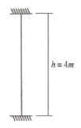
- 209.8kN
- 585.5kN
- 620.8kN
- 840kN
(정답률: 47%)
43. 철근콘크리트 보에서 강도설계법에 의한 콘크리트의 공칭 전단강도(Vc)가 80kN이고, 전단보강근의 공칭전단강도(Vs)가 120kN일 때 설계전단강도(øVn)의 크기는? (단, 전단에 대한 강도감소계수는 0.85임)
- 150kN
- 170kN
- 200kN
- 220kN
(정답률: 46%)
44. 다음 중 등가정적해석법을 사용하여 밑면전단력을 산정하는 경우, 밑면전단력의 크기가 가장 작은 구조물은?
- 건물의 중량이 크고 주기가 짧은 구조물
- 건물의 중량이 크고 주기가 긴 구조물
- 건물의 중량이 작고 주기가 짧은 구조물
- 건물의 중량이 작고 주기가 긴 구조물
(정답률: 46%)
45. 보의 길이가 같은 캔틸레버보에서 작용하는 집중하중의 크기가 P3:P2일 때, 보의 간명이 그림과 같다면 최대처짐 y1:y2의 비는?
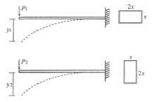
- 1:1
- 2:1
- 4:1
- 8:1
(정답률: 54%)
46. 연약지반에서 부동침하를 방지하는 대책으로 옳지 않은 것은?
- 건물을 경량화한다.
- 지하실을 강성체로 설치한다.
- 줄기초와 마찰말뚝기초를 병용한다.
- 건물의 구조강성을 높인다.
(정답률: 63%)
47. 강도설계법에 의한 철근콘크리트 보 설계에서 단순지지 된 경우 처짐을 계산하지 않아도 되는 보의 최소 두께로 옳은 것은? (단, 보통콘크리트(mc=2,300kg/m3)와 설계기준할복강도 400MPa 철근을 사용)
- ℓ/16
- ℓ/20
- ℓ/24
- ℓ/28
(정답률: 54%)
48. 그림과 같은 보에서 A점에 200kNㆍm의 모멘트가 작용하였을 때 B점이 지지하는 모멘트 및 수직반력은?
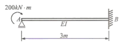
- MBA=200kNㆍm, VB=100kN
- MBA=200kNㆍm, VB=50kN
- MBA=100kNㆍm, VB=100kN
- MBA=100kNㆍm, VB=50kN
(정답률: 59%)
49. 강구조 용접에서 용접결함에 관한 용어와 거리가 먼 것은?
- 오버랩(overlap)
- 엔드탭(end tap)
- 피트(pit)
- 언더컷(under cut)
(정답률: 52%)
50. 그림과 같은 내인보에 집중하중이 작용할 때 A점의 처짐각 ⍬A를 구하면?
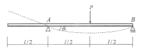
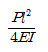
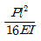
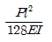
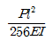
(정답률: 60%)
51. 단면의 지름이 150mm, 재축방향 길이가 300mm인 원형 강봉의 윗면에 300kN의 힘이 작용하여 재축방향 길이가 0.16mm 줄어들었고, 단면의 지름이 0.01mm 늘어 났다면 이 강봉의 탄성계수 E와 푸와송비는?
- 31830MPa, 0.25
- 31830MPa, 0.125
- 31630MPa, 0.25
- 31630MPa, 0.125
(정답률: 44%)
52. 다음 중 내진설계의 기본적인 개념으로 옳지 않은 것은?
- 설계지진하중에 대한 구조물의 부분 파손을 가정한다.
- 보의 파괴보다는 기둥의 파괴를 유도한다.
- 특정층에 파괴가 집중되지 않도록 유도한다.
- 접합부보다는 부재중간의 파괴를 유도한다.
(정답률: 56%)
53. 장방향 단면에서 폭 b가 일정하고 높이 h만 2배로 증가했을 때 휨강도는 몇 배가 되는가? (단, M은 일정)
- 변함없다.
- 2배
- 3배
- 4배
(정답률: 59%)
54. 철근콘트리트의 단근보를 강도설계법으로 설계시 콘크리트가 받는 압축력으로 옳은 것은? (단, fck=27MPa, 보의 폭 300mm, 음력블록의 깉이 120mm)
- 750.6kN
- 782.4kN
- 826.2kN
- 850.8kN
(정답률: 43%)
55. 그림과 같은 단면의 x, y축에 대한 단면상승모멘트 Ixy는 얼마인가?
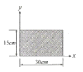
- 10,000cm4
- 22,500cm4
- 33,750cm4
- 50,625cm4
(정답률: 47%)
56. 그림과 같은 단면의 단순보에서 보의 중앙점 C단면에 생기는 휨음력 σb와 전단음력 v의 값은?
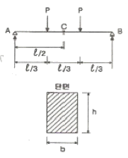
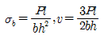
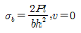
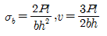
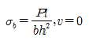
(정답률: 51%)
57. 그림과 같은 단면에 전단력 50kN이 가해진 경우 중립축에서 상방향으로 100mm 떨어진 지점의 전단응력은?
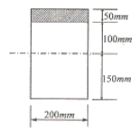
- 0.85MPa
- 0.79MPa
- 0.73MPa
- 0.69MPa
(정답률: 36%)
58. 철근콘크리트 구조의 철근 배근에 있어서 잘못된 것은?
- 단순보의 늑근은 중앙부보다 단부에 더 많이 넣는다.
- 연속보 단부에서의 주근은 상부에 더 많이 넣는다.
- 슬래브의 철근은 장변방향보다 단변방향에 더 많이 넣는다.
- 기둥의 띠철근은 상ㆍ하단부보다 중앙부에 더 많이 넣는다.
(정답률: 44%)
59. 다음 중 철골기둥의 주각부에 사용되는 보강재로 거리가 먼 것은?
- 사이드 앵글(side angle)
- 베이스 플레이트(base plate)
- 필러 플레이트(filler plate)
- 윙 플레이트(wing plate)
(정답률: 57%)
60. 강도설계법에서 D22 압축철근의 기본정착길이는? (단, fck=27MPa, fy=400MPa)
- 200.5mm
- 352mm
- 423.4mm
- 604.6mm
(정답률: 50%)
4과목: 건축설비
61. 관 속의 유체에 섞여 있는 모래, 쇠부스러기 등의 이물질을 제거하여 기기의 성능을 보호하기 위해 배관에 설치하는 것은?
- 볼 탭
- 패킹
- 체크 밸브
- 스트레이너
(정답률: 61%)
62. 다음 중 배수설비에 있어서 통기관을 설치하는 목적과 가장 거리가 먼 것은?
- 배수계통내의 배수의 흐름을 원활히 한다.
- 사이폰 작용에 의해서 트랩 봉수가 파괴되는 것을 방지한다.
- 배수관 계통이 환기를 도모하여 관내를 청결하게 유지한다.
- 세정 배수 중의 유지분을 포집하여 배수관이 막히는 것을 방지한다.
(정답률: 55%)
63. 바닥면적이 50[m2]인 사무실이 있다. 32[W] 형광등 20개를 균등하게 배치할 때 사무실의 평균 조도는? (단, 형광등 1개의 광속은 3,300[lm], 조명률은 0.5, 보수율은 0.76 이다.)
- 약 500[lx]
- 약 450[lx]
- 약 400[lx]
- 약 350[lx]
(정답률: 32%)
64. 습공기가 냉각될 때 어느 정도의 온도에 다다르면 공기 중에 포함되어 있던 수증기가 작은 물방울로 변화하는데, 이 때의 온도를 무엇이라 하는가?
- 노점온도
- 상대온도
- 멘탈피
- 유효온도
(정답률: 72%)
65. 다음 중 현열 변화량과 엔탈피 변화량의 비를 나타내는 것은?
- 현열비
- 열수분비
- 바이패스 팩터
- 콘택트 팩터
(정답률: 65%)
66. 일반적으로 보일러 선정시에 기준이 되는 출력(난방부하, 급탕부하, 배관부하, 예열부하의 합)의 표시방법은?
- 과부하 출력
- 상용 출력
- 정미 출력
- 정격 출력
(정답률: 52%)
67. 전압이 1[V]일 때 1[A]의 전류가 1[s]동안 하는 일을 나타내는 것은?
- 1[Ω]
- 1[J]
- 1[dB]
- 1[W]
(정답률: 70%)
68. 다음의 설명에 알맞은 냉동기는?
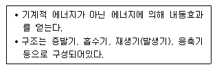
- 터보식 냉동기
- 스크류식 냉동기
- 흡수식 냉동기
- 왕복동식 냉동기
(정답률: 79%)
69. 다음의 에스컬레이터에 대한 설명 중 옳지 않은 것은?
- 기다리는 시간이 없고 연속적으로 승객을 수송할 수 있다.
- 수송능력이 엘리베이터의 약 10배 정도이다.
- 정격 속도는 하강방향을 고려하여 60m/min 정도가 가장 바람직하다.
- 기계실이 필요하지 않으며 피크가 간단하다.
(정답률: 71%)
70. 전력설비의 기기를 이상전압(뇌서지, 개폐서지)으로부터 보호하는 장치는?
- 전력 퓨즈
- 계기용 변성기
- 피뢰기
- 과전류 계전기
(정답률: 48%)
71. 다음의 각종 보일러에 대한 설명 중 옳은 것은?
- 노동 연관보일러는 부하변동에 잘 적응되며, 보유 수면이 넓어서 급수용량 제어가 쉽다.
- 관류보일러는 보유수량이 많아 예열시간이 길다.
- 주철제 보일러는 사용 내압이 높아 고압용으로 주로 사용되며 용량도 크다.
- 수관보일러는 소용량으로 소규모 건물에 적합하며 지역난방으로는 사용이 불가능하다.
(정답률: 31%)
72. 다음 설명이 의미하는 봉수파괴 원인은?
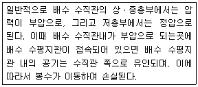
- 증발현상
- 모세관 현상
- 자기사이폰 작용
- 유도사이폰 작용
(정답률: 56%)
73. 비상콘센트 설비에 관한 설명 중 옳지 않은 것은?
- 하나의 전용회로에 설치하는 비상콘센트는 10개 이하로 한다.
- 건축물의 11층 이상의 층에서는 그 층의 각 부분에서 비상콘센트까지의 거리를 최대 60m 이하로 한다.
- 비상콘센트는 바닥으로부터 높이 0.8m 이상 1.5m 이하의 위치에 설치한다.
- 비상콘센트설비의 전원회로는 각 층에 있어서 2 이상이 되도록 설치하는 것이 원칙이다.
(정답률: 52%)
74. 전양정 24m, 양수량 13.8m3/h, 효율 60%일 때 펌프의 축동력은?
- 약 0.5 kW
- 약 1.0 kW
- 약 1.5 kW
- 약 3.0 kW
(정답률: 53%)
75. 실내음환경의 잔향시간에 대한 설명 중 옳은 것은?
- 잔향시간은 음향청취를 목적으로 하는 공간이 음성전달을 목적으로 하는 공간보다 짧아야 한다.
- 잔향시간을 길게 하기 위해서는 실내공간의 용적이 작아야 한다.
- 실의 흡음력이 높을수록 잔향시간은 길어진다.
- 영화관은 전기음향설비가 주가 되므로 잔향시간은 짧을수록 좋다.
(정답률: 59%)
76. 다음 설명에 알맞은 엘리베이터의 안전장치는?
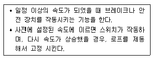
- 조속기
- 완충기
- 도어 클로저
- 최종 리미트 스위치
(정답률: 60%)
77. 다음과 같은 특징을 갖는 배선공사는?
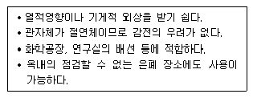
- 금속관 공사
- 버스덕트 공사
- 경질비닐관 공사
- 라이팅덕트 공사
(정답률: 72%)
78. 다음 중 슬리브(sleeve)에 대한 설명으로 옳은 것은?
- 배관시 차후의 교체, 수리를 편리하게 하고 관의 신축에 무리가 생기지 않도록 하기 위해 사용한다.
- 가열장치 내의 압력이 설정압력을 넘는 경우에 압력을 도피시키기 위해 사용한다.
- 사이폰 작용에 의한 트랩의 봉수 파괴 방지를 위해 사용한다.
- 스케일 부착 및 이물질 투입에 의한 관 폐쇄를 방지하기 위해 사용한다.
(정답률: 60%)
79. 다음 중 냉ㆍ난방부하의 계산에서 난방의 경우는 일반적으로 고려하지 않으나 냉방의 경우는 반드시 계산해야 하는 항목은?
- 외벽, 유리창을 통한 관류부하
- 도입외기에 의한 외기부하
- 인체부하
- 바닥을 통한 관류부하
(정답률: 61%)
80. 다음 통기관의 관경에 대한 설명 중 옳지 않은 것은?
- 각개통기관의 관경은 그것이 접속되는 배수관 관경의 1/2 이상으로 한다.
- 신정통기관의 관경은 배수수직관의 관경보다 작게해서는 안된다.
- 회로통기관의 관경은 배수수평지관과 통기수직관 중 큰쪽 관경의 1/2 이상으로 한다.
- 결합통기관의 관경은 통기수직관과 배수수직관 중 작은 쪽 관경 이상으로 한다.
(정답률: 37%)
5과목: 건축법규
81. 일반주거지역내에서 그림과 같은 건물을 건축할 경우 인접 대지 경계선으로부터 띄어야 할 최소거리 x는? (단, 건물은 9m 높이의 3층 주택임)
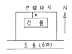
- 4.5m
- 6.0m
- 7.5m
- 9.0m
(정답률: 60%)
82. 관련 규정에 의하여 건축물에 설치하는 지하층의 구조 및 설비에 관한 기준 내용으로 옳지 않은 것은?
- 거실의 바닥면적이 50제곱미터 이상인 층에는 직통계단외에 피난층 또는 지상으로 통하는 비상탈출구 및 환기통을 설치할 것
- 바닥면적이 1천제곱미터이상인 층에는 피난층 또는 지상으로 통하는 직통계단을 방화구획으로 수획되는 각 부분마다 1개소 이상 설치하되, 이를 피난계단 및 특별피난계단의 구조로 할 것
- 거실의 바닥면적의 합계가 1천제곱미터 이상인 층에는 환기설비를 설치할 것
- 지하층의 바닥면적이 200제곱미터 이상인 층에는 식수공급을 위한 급수전을 1개소이상 설치할 것
(정답률: 56%)
83. 건물의 소유자나 관리자는 건축물이 재해로 멸실된 경우 멸실 후 최대 몇 일 이내에 신고를 하여야 하는가?
- 10일
- 20일
- 30일
- 50일
(정답률: 69%)
84. 다음 중 옥외피난계단을 설치하여야 하는 대상 기준 내용과 가장 관계가 먼 것은?
- 건축물 용도
- 층수
- 거실의 바닥면적
- 연면적
(정답률: 42%)
85. 부설주차장의 규모가 주차대수 300대 이하인 경우 시설물의 부지인근에 단독 또는 공동으로 부설주차장을 설치할 수 있다. 다음 중 부지인근의 범위에 관한 기준 내용으로 알맞은 것은?
- 당해 부지의 경계선으로부터 부설주차장의 경계선까지의 직선거리 200m 이내 또는 도보거리 500m 이내
- 당해 부지의 경계선으로부터 부설주차장의 경계선까지의 직선거리 300m 이내 또는 도보거리 500m 이내
- 당해 부지의 경계선으로부터 부설주차장의 경계선까지의 직선거리 200m 이내 또는 도보거리 600m 이내
- 당해 부지의 경계선으로부터 부설주차장의 경계선까지의 직선거리 300m 이내 또는 도보거리 600m 이내
(정답률: 54%)
86. 다음의 도시계획시설결정의 실효과 관련된 기준 내용 중 ( )안에 알맞은 내용은?
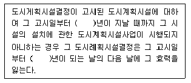
- 5
- 10
- 15
- 20
(정답률: 60%)
87. 시가화조정구역의 지정시 시가화 유보기간으로 정할 수 있는 기간은?
- 3년 이상 5년이내
- 3년 이상 10년이내
- 5년 이상 20년이내
- 5년 이상 30년이내
(정답률: 74%)
88. 다음 중 피난층이 아닌 거실에 배연설비를 설치하여야 하는 대상 건축물에 속하지 않는 것은? (단, 6층 이상인 건축물의 경우)
- 판매시설
- 종교시설
- 교육연구시설 중 학교
- 운수시설
(정답률: 52%)
89. 지하식 또는 건축물식 노외주차장의 차로에 관한 기준 내용으로 옳지 않은 것은?
- 높이는 주차바닥면으로부터 2.3미터 이상으로 하여야 한다.
- 굴곡부는 자동차가 4미터 이상의 내변반경으로 회전이 가능하도록 하여야 한다.
- 경사로이 종단경사도는 직선부분에서는 17퍼센트를 곡선부분에서는 14퍼센트를 초과하여서는 아니된다.
- 주차대수규모가 50대 이상인 경우의 경사로는 너비 6미터 이상인 2차선의 차로를 확보하거나 진입차로와 진출차로를 분리하여야 한다.
(정답률: 56%)
90. 20m 간선도로변 일반주거지역의 건축물에 설치한 냉방시설의 배기구로서 보행자를 배려한 설비를 따로 하지 않았을 경우 설치높이 기준은?
- 도로면으로부터 1.5m 이상
- 대지면으로부터 1.5m 이상
- 도로면으로부터 2.0m 이상
- 대지면으로부터 2.0m 이상
(정답률: 50%)
91. 주요구조부를 내화구조로 하여야 하는 대상 건축물에 대한 기준 내용으로 옳지 않은 것은?
- 장례식장의 용도로 쓰는 건축물로서 집회실의 바닥면적의 합계가 200제곱미터 이상인 건축물
- 문화 및 집회시설 중 전시장의 용도로 쓰는 건축물로서 그 용도로 쓰는 바닥면적의 합계가 400제곱미터 이상인 건축물
- 공장의 용도로 쓰는 건축물로서 그 용도로 쓰는 바닥 면적의 합계가 2,000제곱미터 이상인 건축물
- 건축물의 2층이 숙박시설의 용도로 쓰는 건축물로서 그 용도로 쓰는 바닥면적의 합계가 400제곱미터 이상인 건축물
(정답률: 32%)
92. 다음 공동주택의 평면도에서 발코니 면적은 바닥면적에 얼마나 산입되는가? (단, 실내와 발코니 사이의 선은 외벽의 중심선이다.)
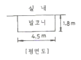
- 바닥면적에 산입되지 않는다.
- 1.35m2
- 4.⑤m2
- 8.1m2
(정답률: 49%)
93. 가설건축물을 축조하려는 자가 대통령령으로 정하는 존치기간, 설치 기준 및 절차에 따라 특별자치도지사 또는 시장ㆍ군수ㆍ구청장에게 신고한 후 착공하여야 하는 대상 가설건축물레 해당되지 않는 것은?
- 전시를 위한 견본주택
- 농업용 고정식 온실
- 공장에 설치하는 창고용 천막
- 조립식 구조로 된 경비용에 쓰이는 가설건축물로서 연면적이 15m2인 것
(정답률: 51%)
94. 노외주차장에서 요구되는 차로의 최소 너비가 가장 큰 주차형식은?
- 60도 대향주차
- 45도 대향주차
- 평행주차
- 직각주차
(정답률: 60%)
95. 다음 중 시설보호지구의 지정 목적에 속하지 않는 것은?
- 학교시설의 보호
- 향만의 효율화
- 항공기의 안전운항
- 문화재의 보호
(정답률: 43%)
96. 다음 중 허가 대상 건축물이라 하더라도 건축신고를 하면 건축허가를 받은 것으로 보는 건축물이 아닌 것은?
- 연면적의 합계가 80m2인 건축물의 건축
- 바닥면적의 합계 80m2를 증축하는 건축물
- 건축물의 높이 4m를 증축하는 건축물
- 연면적 150m2이고 2층인 건축물의 대수선
(정답률: 42%)
97. 비상용승강기의 승강장의 구조에 관한 기준 내용으로 옳지 않은 것은?
- 승강장의 창문ㆍ출입구 기타 개구부를 제외한 부분은 당해 건축물의 다른 부분과 내화구조의 바닥 및 벽으로 구획할 것
- 피난층이 있는 승강장의 출입구로부터 도로 또는 공지에 이르는 거리가 30미터 이하일 것
- 벽 및 반자가 실내에 접하는 부분의 마감재료는 불연재료 또는 준불연재료로 할 것
- 채광이 되는 창문이 있거나 예비전원에 의한 조명설비를 할 것
(정답률: 70%)
98. 다음 중 건축법령에 따라 건축시 지방건축위원회의 건축 심의를 받는 대상 건축물에 속하지 않는 것은?
- 종합병원의 용도로 쓰이는 바닥면적의 합계가 6000m2인 건축물
- 17층의 사무소
- 연면적 10000m2의 아파트
- 16층의 관광호텔
(정답률: 40%)
99. 주차장과 문화 및 집회시설을 함께 설치하는 경우에 주차장법에 의한 주차전용건축물이 기준에 적합하기 위해서는 주차장으로 사용되는 부분의 면적이 당해 건축물 연면적의 최소 몇 % 이상이어야 하는가?
- 60%
- 70%
- 80%
- 95%
(정답률: 71%)
100. 건축물의 높이ㆍ층수 등의 산정방법에 관한 기준내용으로 옳지 않은 것은?
- 난간벽(그 벽면적의 2분의 1 이상이 공간으로 되어 있는 것만 해당한다.)은 그 건축물의 높이에 산입하지 아니한다.
- 처마높이는 지표면으로부터 건축물의 지붕틀 또는 이와 유사한 수평재를 지지하는 벽ㆍ깔도리 또는 기둥의 상단까지의 높이로 한다.
- 층고는 방의 바닥구조체 중간으로부터 위층 바닥구조체의 중간까지의 높이로 한다.
- 층의 구분에 명확하지 아니한 건축물은 그 건축물의 높이 4m 마다 하나의 층으로 산정한다.
(정답률: 60%)